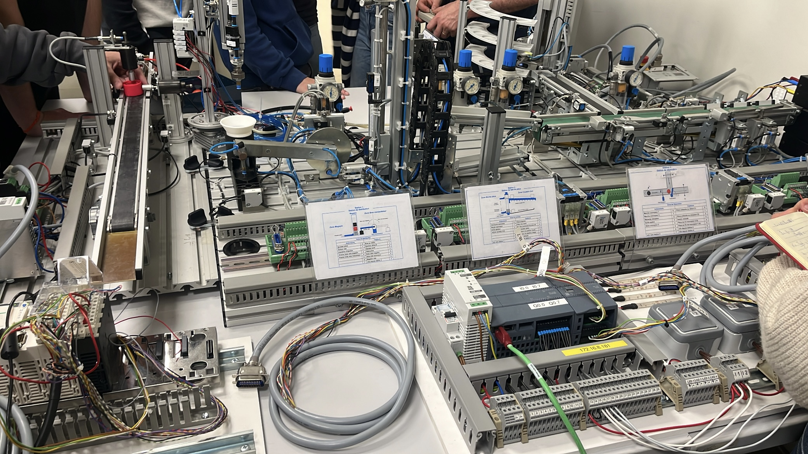
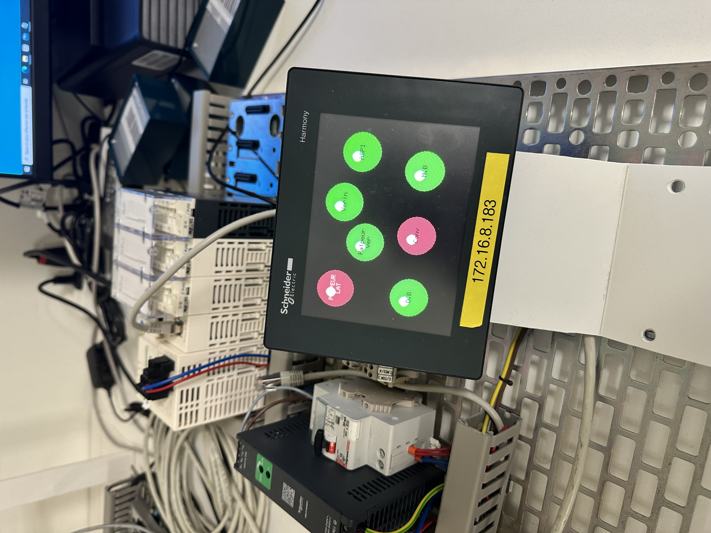

Présentation du Projet
Le Défi Technique
En Formule 1, chaque type de pneu (sec, intermédiaire ou pluie) répond à des spécifications strictes.
Dans le cadre de cette SAÉ, notre objectif était d'automatiser le tri de pièces en contrôlant leur conformité avec des capteurs industriels.
Ma mission
Au sein d'une chaîne miniaturisée composée de plusieurs stations, nous avons automatisé la Station V.I.T (Vérification, Inspection et Tri).
Nous avons, avec mon binôme, assuré la rédaction du cahier des charges, l'écriture du Grafcet de contrôle, sa programmation logicielle ainsi que la supervision sur écran tactile.
Comment Fonctionne la Station ?
1. Approvisionnement et vérification
Un vérin pousse le pneu sur le tapis roulant. La pièce s'arrête sous un palpeur vertical qui permet de simuler sa conformité ou sa non-conformité.
2. Tri & Évacuation
Si la pièce présente un défaut, elle est évacuée en bout de convoyeur. Si elle est conforme, un bras articulé à ventouse la saisit pour la déposer dans son bac dédié.


Ce que m'a apporté le projet
Outils & Compétences Techniques
- Écriture et analyse de Grafcet : Modélisation complète des séquences, transitions et conditions de sécurité de la station.
- Control Expert : Programmation d'automates Schneider, conversion du Grafcet en langage Ladder et gestion des E/S.
- Vijeo Designer : Conception de l'interface Homme-Machine (IHM) tactile, animation des voyants d'état et liaison avec l'automate.
- Pneumatique & Capteurs : Réglage des vérins, des palpeurs et commande de l'aspiration.
Soft Skills & Résolution de Problèmes
Gestion du temps & temporisations : La principale difficulté résidait dans le réglage précis des temporisations sous Control Expert pour immobiliser le pneu exactement sous la ventouse de préhension.
Travail en équipe : Coordination avec le binôme et l'équipe, répartition de la charge de travail et communication.
Contact
Vous souhaitez échanger sur ce projet ou consulter mon CV ?